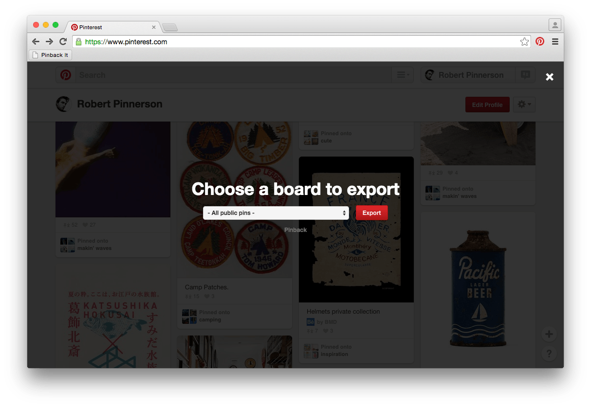

The backup and export tool Pinterest forgot
Pinback is a free, simple bookmarklet that allows you to backup and export your Pinterest data. It runs privately in your web browser and exports your pinned links to a Netscape Bookmark-flavored HTML file. This is the de facto standard among web browsers and services like Delicious, making your data safe and easily portable. “Netscape” also has that wonderful artisanal-aged, vintage-inspired sound to it, don’t you think?

How does it work?
- Install the “Pinback It” bookmarklet (above) to your web browser of choice.
- Log in to Pinterest and visit your profile (pinterest.com/username).
- Click “Pinback It” in your browser.
- Choose to export “All public pins” (all non-private pins, grouped by board), or an individual board (private boards must be exported individually).
- Save exported HTML file to your computer.
What can I do with the export?
Keep a copy of the HTML file on your computer or Dropbox as a backup. You can open it like a normal web page (just double click the file) to see a list of your pinned items. Your pinned links are just a click away, and that amazing massaged kale recipe is safe from Pinterest outages, accidental deletes, and leafy-green-hating robot overlords.
You can also import your data into your favorite application or web browser. Here are some that are known to support the Netscape format:
It’s your data, do as you wish!
Disclaimer
Pinback is released under the MIT license, and is in no way affiliated or endorsed by Pinterest. Provided without warranty, use at your own risk.
Contribute
View source code and help improve Pinback on GitHub.